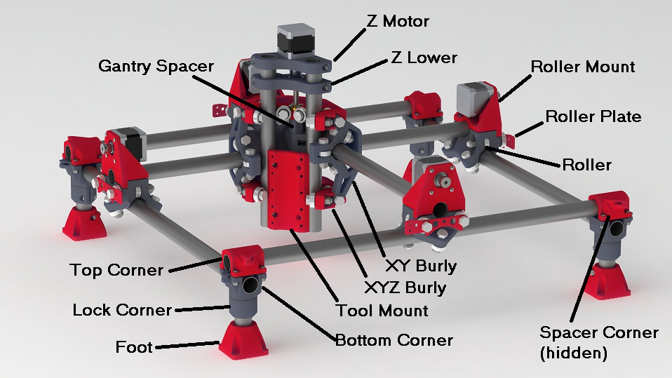

MPCNC Parts¶
Printed Parts¶
There are 3 different sets of printed parts C-23.5mm, F-25mm, or J-25.4mm (1 inch). The measurement is for the Outside Diameter of the conduit/rails/tubing. Please measure your rails before printing! 23.5mm fits ¾″ EMT conduit in the US. Anywhere else you must physically measure first. Some things are sold as Inside Dimension (ID) (conduit), or Outside Dimension (OD) (tubing). If you print for the wrong size tube, it’s a bummer!
Hardware store steel EMT conduit works well and is inexpensive; an upgrade would be .049” wall thickness stainless steel tubing (or thicker is fine as well). Stainless steel tubing is more rigid and smooth, but also much more expensive.
Recommended Print Settings: PLA for dimensional accuracy (PETG is also good, if your dimensions are verified good). Two or more perimeters for through hole strength. There are some steep walls so no more than 75% layer height to nozzle diameter. No support should be needed for any part I have designed.
PrusaPrinters.org;My Files
Thingiverse.com;
Download 23.5 mm (“C”) parts files
Download 25 mm (“F”) parts files
Download 25.4 mm (“J”) parts files
| QTY | Name | Infill | Time Per Part/Total | Grams Per Part/Total |
|---|---|---|---|---|
| 2 | Bottom_Corner* | 55% | 2:35 / 5:10 | 34.7 / 69.4 |
| 2 | BottomM_Corner* | 55% | 2:35 / 5:10 | 34.7 / 69.4 |
| 2 | Lock-Corner* | 55% | 1:28 / 2:56 | 20.8 / 41.7 |
| 2 | LockM_Corner* | 55% | 1:28 / 2:56 | 20.8 / 41.7 |
| 2 | Top_Corner* | 55% | 2:06 / 4:12 | 32.9 / 66.1 |
| 2 | TopM_Corner* | 55% | 2:06 / 4:12 | 32.9 / 66.1 |
| 4 | Spacer_Corner_*_Burly | 65% | 0:15 / 1:05 | 4.2 / 16.6 |
| 4 | *-Foot_2018 | 35% | 2:20 / 9:20 | 31.8 / 127.1 |
| 2 | *-Roller | 55% | 5:35 / 11:10 | 90 / 180 |
| 2 | *-Roller M | 55% | 5:35 / 11:10 | 90 / 180 |
| 4 | RollerMount | 55% | 3:30 / 14:00 | 50 / 200 |
| 4 | RollerPlate (optional Dual) | 55% | 0:10 / 0:40 | 2 / 8 |
| 2 | XY_*_Burly | 55% | 11:00 / 22:00 | 201 / 402 |
| 2 | XYZ_*_Burly | 65% | 5:00 / 10:00 | 71.5 / 143 |
| 2 | Gantry_Spacer_* | 55% | 0:22 / 0:45 | 10.3 / 10.3 |
| 2 | Nut_Trap_Burly | 55% | 0:27 / 0:55 | 16 / 32 |
| 1 | Tool_Mount_*_4mm/6-32 | 35% | 4:45 / 4:45 | 63.4 / 63.4 |
| 1 | Z_Lower_*_Burly | 55% | 2:15 / 2:15 | 35 / 35 |
| 1 | Z_Motor_*_Burly | 55% | 2:15 / 2:15 | 31 / 31 |
| Total | Total | |||
| ≈115 hrs | 1.8 kg |
*: The asterisk stands for part letter (C, J, F) and anything after that is the current revision (Burly, v1, v2)
M: Mirrored parts, either see the build instructions or FAQ if you are worried.

Printed Parts Changelog
10/15/18 – Burly Center & Z
4/1/18 – Optional dual plate
3/19/18 – New foot
5/9/17 – lead screw compatible XYZ
7/13/16 – New Rollers
5/25/16 – New middle and Z-Axis assemblies
4/24/16 – New corner assembly
Electronics/Motion Parts¶
Recommended electronics, you have a lot of options. I chose these specific parts for price vs. performance.
Some of these are affiliate links, you can buy from these links or just use them for information. In case you didn’t know amazon prime is free for students, and here is a free 30 day trial for non students.
| Qty | Part | Link |
|---|---|---|
| 1 | Mini-RAMBo (or RAMBo) | Amazon or Shop |
| 1 | 12v ≥5A power supply | Amazon or Shop |
| 4m (≈13 ft) [Note 1] |
GT2 belt, do not get the steel reinforced ones | Amazon or Shop |
| 4 | GT2 16T Pulley | Amazon or Shop |
| 53 | 608 2-RS Bearings | Amazon or Shop |
| ≈18ft [Note 1] | Rails (Conduit or Stainless Steel) | Info, Info – Calculator |
| 5 | Nema 17 Steppers | Amazon or Shop |
| 1 | Wiring harness (Or extended your stepper plugs with Stranded Wire) | Wiring Kit, Stranded Wire |
| ≥20 | Zip Ties | Amazon or Shop |
Note 1: These dimensions are for a 24”x24” working area (610x610 mm). This size has approximately 36”x36” external dimensions (914x914 mm). See the calculator for other dimensions.
Spindle Options¶
| Spindle | Link | |
|---|---|---|
| Best Option | Dewalt 660 (600W) 120V | Amazon |
| Second Choice | Spindle 300W-800W | Amazon – AliExpress |
Blank tool mount for any other tools you might want to use.
Hardware¶
Hardware and quantities needed:
| Qty | Imperial | Metric | Link |
|---|---|---|---|
| 1 | T8 Leadscrew and nut | T8 Leadscrew and nut | Amazon or Shop |
| 1 | Lube for the T8 | Lube for the T8 | Shop |
| 1 | 5mm-8mm coupler | 5mm-8mm coupler | Shop |
| 1 | 5/16-18 X 5 | M8 X 130 | Amazon |
| 12 | 5/16-18 X 2.5 | M8 X 65 | Amazon |
| 2 | 5/16-18 X 1.5 | M8 X 40 [Note 2] | Amazon |
| 28 | 5/16-18 X 1.25 | M8 X 30 | Amazon |
| 43 | 5/16-18 Nylock Nuts | M8 Nylock Nuts | Amazon |
| 19 | M3 X 10 | M3 X 10 | Amazon |
| 57 | #6-32 X.75 | M4 X 20 [Note 3] | Amazon |
| 57 | #6-32 Nylock nuts | M4 [Note 3] | Amazon |
Note 2: The M8x40mm bolts cannot be cap heads, or you will need to grind the heads for clearance
Note 3: Using M4 nuts and bolts in place of #6 is possible, but the difference in the size of nuts requires some
creative tightening on a few parts. A small flat head screw driver can usually be wedged in
to stop the nuts from rotating. As another option, here are some quick print sleeves.